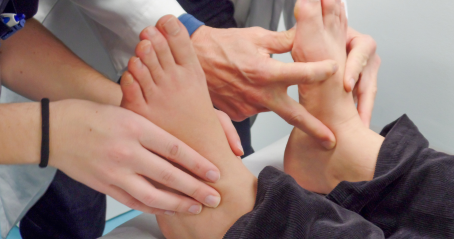

Flat feet, also known as fallen arches or pes planus, is a common condition where the arch of the foot collapses, causing the entire sole of the foot to come into complete or near-complete contact with the ground. This condition can affect people of all ages, but it is more prevalent in older adults and children. While many people with flat feet experience no pain or discomfort, others may experience pain, foot fatigue, and difficulty with physical activities. In this article, we will explore the seriousness of flat feet and why orthotics may be the solution.
The severity of flat feet can vary from person to person. In some cases, flat feet may cause no symptoms or problems and require no treatment. However, for others, flat feet can lead to several health problems, including:
In order to determine the severity of flat feet and the best course of treatment, it is important to seek a professional evaluation from a doctor or chiropractor. They will be able to diagnose the condition and recommend appropriate treatment options based on the individual’s needs and symptoms.
Orthotics may be an effective solution for people with flat feet. Orthotics are custom-made shoe inserts that provide support and stability for the feet, reducing pain and discomfort. Orthotics can also help improve balance, alignment, and posture, reducing the risk of overuse injuries and other health problems.